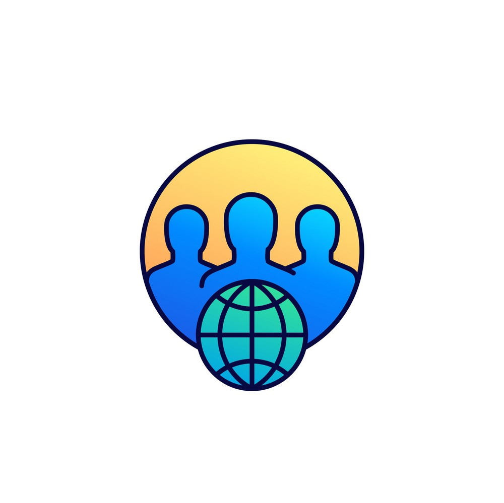

About Me
Haii,nama saya Rifky Ramadhan kelahiran 09 Desember 2000 asal dari kota kuda kuningan jawa barat,saya merupakan mahasiswa Sistem Informasi angkatan 2020 Universitas Ahmad Dahlan. pemrograman sudah menjadi kegemaran saya terutama dibagian website,awal mula terjun ke dunia pemrograman yaitu sekitar tahun 2019 silam,kala itu platform pertama yang saya geluti yaitu salah satu platform course online yang cukup populer yaitu codepolitan,platform ini terfokus dibagian web developer.